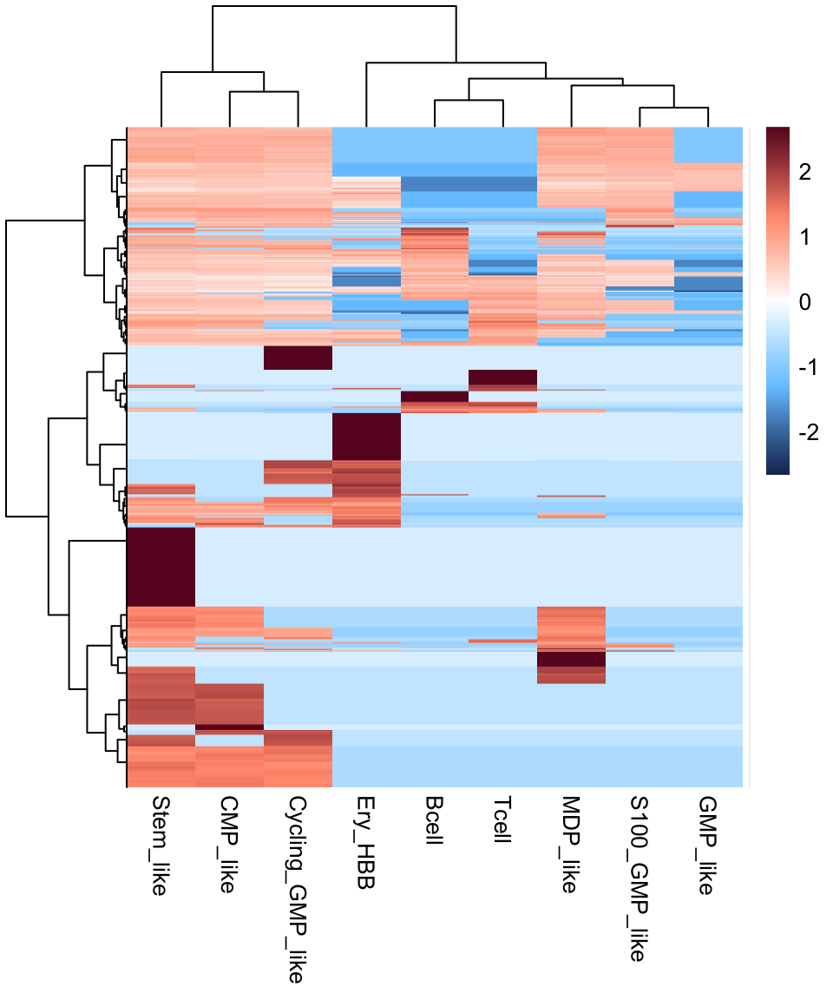

Chapter 2 scRNA-seq
2.1 Load packages
suppressMessages({
library(dplyr)
library(e1071)
library(pheatmap)
library(ggplot2)
library(DESeq2)
library(openxlsx)
library(dendextend)
library(matrixStats)
library(ggpubr)
library(limma)
library(randomForest)
library(clusterProfiler)
library(genefilter)
library(GSVA)
library(Biobase)
library(org.Hs.eg.db)
library(ggplot2)
library(ggthemes)
library(enrichplot)
library(GSEABase)
library(Seurat)
library(monocle)
})2.3 Normal BMMCs
2.3.1 Pre-processing of BMMCs
bmmc <- CreateSeuratObject(counts = bmmc.data, project = "BMMC", min.cells = 0, min.features = 0)
bmmc[["percent.mt"]] <- PercentageFeatureSet(bmmc, pattern = "^MT-")
# Pre-processing data was performed using Seurat
bmmc <- subset(bmmc, subset = nFeature_RNA > 300 & percent.mt < 10 & nCount_RNA < 30000 & nCount_RNA > 500 & Doublet == FALSE )
bmmc <- NormalizeData(bmmc, normalization.method = "LogNormalize", scale.factor = ncol(bmmc) )
bmmc <- FindVariableFeatures(bmmc, selection.method = "vst", nfeatures = 3000)
bmmc <- ScaleData(bmmc, features = VariableFeatures(bmmc))
bmmc <- RunPCA(bmmc, features = VariableFeatures(object = bmmc))
bmmc <- RunHarmony(bmmc, "Sample")
bmmc <- FindNeighbors(bmmc, reduction = "harmony", dims = 1:20)
bmmc <- FindClusters(bmmc, resolution = 0.8)
bmmc <- RunTSNE(bmmc, reduction = "harmony", dims = 1:20, perplexity = 50)
bmmc <- RunUMAP(bmmc, reduction = "harmony", dims = 1:20)
p <- DimPlot(bmmc, reduction = "umap", pt.size = 1,
raster = FALSE, cols = color.lib) + theme_few()
ggsave(paste0(out.path, "/3.ctrl.cluster.pdf"), p, width = 9, height = 7)
p <- DimPlot(bmmc, reduction = "umap", pt.size = 1, label = TRUE, label.size = 10,
raster = FALSE, cols = color.lib) + theme_few()
ggsave(paste0(out.path, "/3.ctrl.cluster.label.pdf"), p, width = 9, height = 7)2.3.2 Annotation of normal BMMCs
ref <- readRDS(file = "SingleR/hs.BlueprintEncodeData.RDS")
pred.BlueprintEncodeData <- SingleR(test = bmmc@assays$RNA@data, ref = ref, labels = ref$label.main)
ref <- readRDS(file = "SingleR/hs.HumanPrimaryCellAtlasData.RDS")
pred.HumanPrimaryCellAtlasData <- SingleR(test = bmmc@assays$RNA@data, ref = ref, labels = ref$label.main)
ref <- readRDS(file = "SingleR/ImmGenData.RDS")
pred.ImmGenData <- SingleR(test = bmmc@assays$RNA@data, ref = ref, labels = ref$label.main)
ref <- readRDS(file = "SingleR/MonacoImmuneData.RDS")
pred.MonacoImmuneData <- SingleR(test = bmmc@assays$RNA@data, ref = ref, labels = ref$label.main)
ref <- readRDS(file = "SingleR/NovershternHematopoieticData.RDS")
pred.NovershternHematopoieticData <- SingleR(test = bmmc@assays$RNA@data, ref = ref, labels = ref$label.main)2.4 APLs
2.4.1 Pre-processing of APLs
apl <- CreateSeuratObject(counts = apl.data, project = "BMMC", min.cells = 0, min.features = 0)
apl[["percent.mt"]] <- PercentageFeatureSet(apl, pattern = "^MT-")
# Pre-processing data was performed using Seurat
apl <- subset(apl, subset = nFeature_RNA > 300 & percent.mt < 10 & nCount_RNA < 30000 & nCount_RNA > 500 & Doublet == FALSE )
apl <- NormalizeData(apl, normalization.method = "LogNormalize", scale.factor = ncol(apl) )
apl <- FindVariableFeatures(apl, selection.method = "vst", nfeatures = 3000)
apl <- ScaleData(apl, features = VariableFeatures(apl))
apl <- RunPCA(apl, features = VariableFeatures(object = apl))
apl <- RunHarmony(apl, "Sample")
apl <- FindNeighbors(apl, reduction = "harmony", dims = 1:20)
apl <- FindClusters(apl, resolution = 0.8)
apl <- RunTSNE(apl, reduction = "harmony", dims = 1:20, perplexity = 50)
apl <- RunUMAP(apl, reduction = "harmony", dims = 1:20)
p <- DimPlot(apl, reduction = "umap", pt.size = 1,
raster = FALSE, cols = color.lib) + theme_few()
ggsave(paste0(out.path, "/3.ctrl.cluster.pdf"), p, width = 9, height = 7)
p <- DimPlot(apl, reduction = "umap", pt.size = 1, label = TRUE, label.size = 10,
raster = FALSE, cols = color.lib) + theme_few()
ggsave(paste0(out.path, "/3.ctrl.cluster.label.pdf"), p, width = 9, height = 7)2.5 Integration
2.5.1 Integration of APLs and normal BMMCs
exp.data <- cbind(apl@assays$RNA@counts, bmmc@assays$RNA@counts)
meta.data <- rbind(apl@meta.data[, c("orig.ident","CellType.BlueprintEncodeData","CellType.HumanPrimaryCellAtlasData","CellType.ImmGenData","CellType.MonacoImmuneData","CellType.NovershternHematopoieticData")],
bmmc@meta.data[, c("orig.ident","CellType.BlueprintEncodeData","CellType.HumanPrimaryCellAtlasData","CellType.ImmGenData","CellType.MonacoImmuneData","CellType.NovershternHematopoieticData")])
apl <- CreateSeuratObject(counts = exp.data, project = "APL", min.cells = 0, min.features = 0)
apl[["percent.mt"]] <- PercentageFeatureSet(apl, pattern = "^MT-")
apl@meta.data <- cbind(apl@meta.data, meta.data)2.5.2 Normalization
# The dimensionality reduction and clustering were performed using Seurat.
apl <- NormalizeData(apl, normalization.method = "LogNormalize", scale.factor = ncol(apl) )
apl <- FindVariableFeatures(apl, selection.method = "vst", nfeatures = 3000)
# Identify the 10 most highly variable genes
top10 <- head(VariableFeatures(apl), 10)
# Scale data
apl <- ScaleData(apl, features = VariableFeatures(apl))
apl <- RunPCA(apl, features = VariableFeatures(object = apl))2.5.3 Batch effect adjustment
# Set batch
apl@meta.data$Batch <- as.character(apl@meta.data$Sample)
apl@meta.data$Batch[grep("CTRL", apl$Sample)] = "CTRL"
# Batch effect adjustment
apl <- RunHarmony(apl, "Batch", max.iter.harmony = 2, sigma = 0.25)
apl <- FindNeighbors(apl, reduction = "harmony", dims = 1:30)
apl <- FindClusters(apl, resolution = 1)
apl <- RunUMAP(apl, reduction = "harmony", dims = 1:30)2.5.4 Cell annotation
We use SingleR to provide cell type annotation.
ref <- readRDS(file = "SingleR/hs.BlueprintEncodeData.RDS")
pred.BlueprintEncodeData <- SingleR(test = apl@assays$RNA@data, ref = ref, labels = ref$label.main)
ref <- readRDS(file = "SingleR/hs.HumanPrimaryCellAtlasData.RDS")
pred.HumanPrimaryCellAtlasData <- SingleR(test = apl@assays$RNA@data, ref = ref, labels = ref$label.main)
ref <- readRDS(file = "SingleR/ImmGenData.RDS")
pred.ImmGenData <- SingleR(test = apl@assays$RNA@data, ref = ref, labels = ref$label.main)
ref <- readRDS(file = "SingleR/MonacoImmuneData.RDS")
pred.MonacoImmuneData <- SingleR(test = apl@assays$RNA@data, ref = ref, labels = ref$label.main)
ref <- readRDS(file = "SingleR/NovershternHematopoieticData.RDS")
pred.NovershternHematopoieticData <- SingleR(test = apl@assays$RNA@data, ref = ref, labels = ref$label.main)2.6 APL blasts
2.6.2 Normalization
# The dimensionality reduction and clustering were performed using Seurat.
apl <- NormalizeData(apl, normalization.method = "LogNormalize", scale.factor = ncol(apl) )
apl <- FindVariableFeatures(apl, selection.method = "vst", nfeatures = 3000)
# Identify the 10 most highly variable genes
top10 <- head(VariableFeatures(apl), 10)
# Scale data
apl <- ScaleData(apl, features = VariableFeatures(apl))
apl <- RunPCA(apl, features = VariableFeatures(object = apl))2.7 VIPER
out.path.tf <- paste0(out.path, "/viper_APL_vs_CTRL_Granulocyte_1w_cell_per1000")
cmd <- sprintf("mkdir %s", out.path.tf)
system(cmd)
library(viper)
apl.sub <- subset(apl, cells = sub.name)
apl.sub <- ScaleData(apl.sub, features = rownames(apl))
pdata <- apl.sub@meta.data[, c("orig.ident","Lineage","Sample")]
colnames(pdata) <- c('Cell', 'CellType','Sample')
pdata$CellType <- as.character(pdata$CellType)
pdata$Cell <- rownames(pdata)
metadata <- data.frame(labelDescription=c('Cell', 'CellType','Sample'),
row.names=c('Cell', 'CellType','Sample'))
phenoData <- new("AnnotatedDataFrame", data = pdata, varMetadata = metadata)
exp.mat <- apl.sub@assays$RNA@scale.data[rowSums(apl.sub@assays$RNA@scale.data == 0) < ncol(apl.sub@assays$RNA@scale.data)*0.1, ]
dset <- ExpressionSet(assayData=exp.mat,
phenoData=phenoData,
annotation="RNAseq")
#sig <- rowTtest(dset, "CellType", c("LSC_like"), "HSPCs")$statistic
table(pdata$CellType)
signature <- rowTtest(dset, "CellType", c("Leukemia_cell"), "Granulocyte")
nullmodel <- ttestNull(dset, "CellType", c("Leukemia_cell"), "Granulocyte", per = 100, repos = TRUE, verbose = TRUE)
signature <- signature$statistic
mrs <- msviper(signature, regulon, nullmodel)
saveRDS(mrs, paste0(out.path.tf, "/viper.mra.rds"))
saveRDS(signature, paste0(out.path.tf, "/viper.sig.rds"))
saveRDS(nullmodel, paste0(out.path.tf, "/viper.dnull.rds"))2.8 dorothea
library(dorothea)
library(tibble)
library(tidyr)
library(limma)
out.path.tf <- paste0(out.path, "/dorothea_all_lineage_1w_cell")
cmd <- sprintf("mkdir %s", out.path.tf)
system(cmd)
dorothea_regulon_human <- get(data("dorothea_hs", package = "dorothea"))
regulon <- dorothea_regulon_human %>%
dplyr::filter(confidence %in% c("A","B","C","D","E"))
length(unique(regulon$tf))
apl.sub <- run_viper(apl.sub, regulon,
options = list(method = "scale", minsize = 4,
eset.filter = FALSE, cores = 1,
verbose = TRUE))
DefaultAssay(object = apl.sub) <- "dorothea"
apl.sub <- ScaleData(apl.sub)
dim(apl.sub@assays$dorothea@scale.data)
dim(regulon)
sum(regulon$tf %in% rownames(apl.sub))
sum(regulon$target %in% rownames(apl.sub))
length(unique(regulon$tf))
dorothea_scores_df <- GetAssayData(apl.sub, slot = "scale.data", assay = "dorothea") %>%
data.frame(check.names = F) %>% t()
saveRDS(dorothea_scores_df, paste0(out.path.tf, "/dorothea_scores_df.rds"))2.9 Cell signature
The cell signature matrix for each branch in APL was generated using CIBERSORTx (https://cibersortx.stanford.edu/runcibersortx.php)
apl.signature <- read.table("data/CIBERSORTx_sig_1w_branch_mix_out.txt", header = T, row.names = 1)
apl.signature %>% dim()## [1] 3388 9apl.signature %>% head()
pheatmap(as.matrix(apl.signature), scale = "row",
color = colorRampPalette(c("#1B3361","#76C7FF","#FFFFFF","#FF987A","#6A0D28"))(501),
cluster_row = T, cluster_col = T, border_color = NA,
clustering_distance_rows = "manhattan",
clustering_distance_cols = "manhattan",
clustering_method = "ward.D",
fontsize_col = 10,
fontsize_row = 0.1)